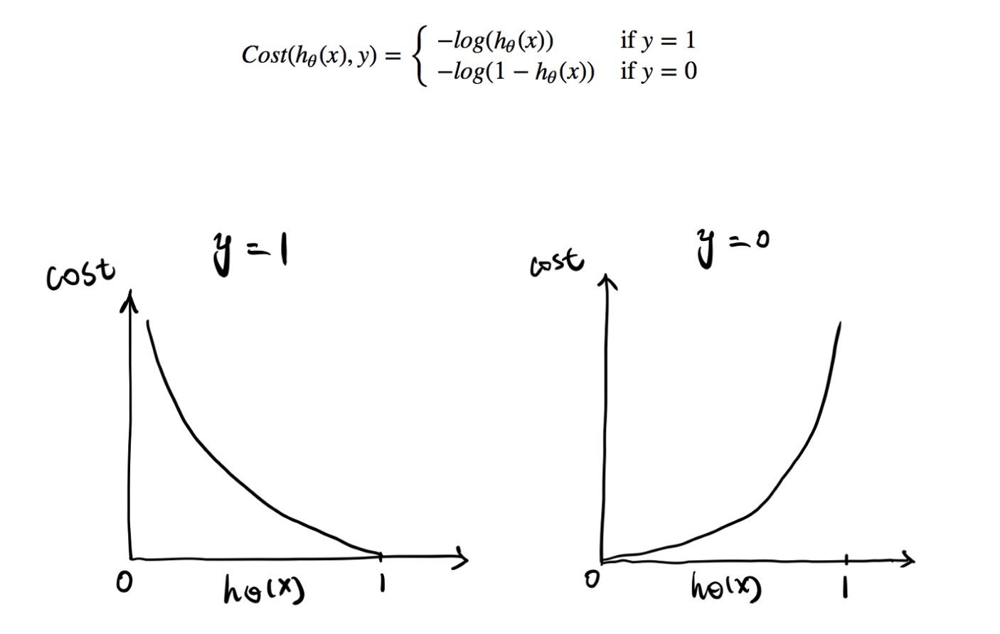
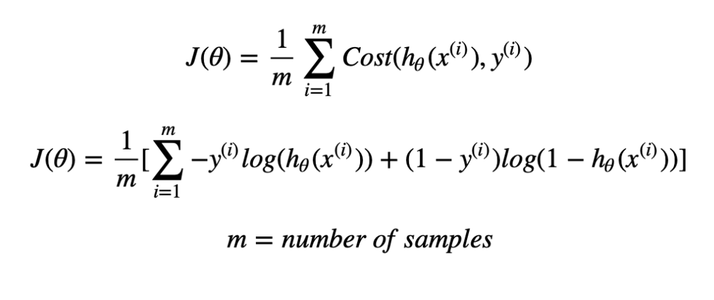
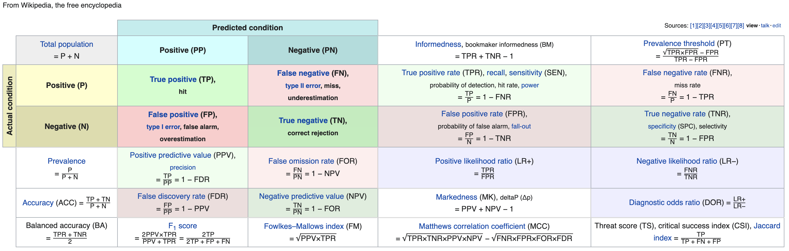
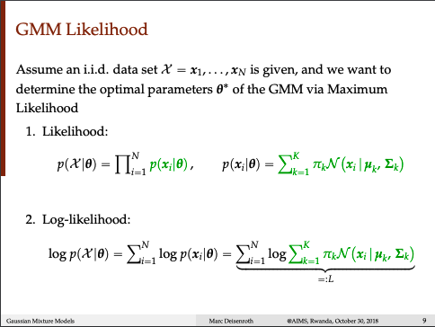
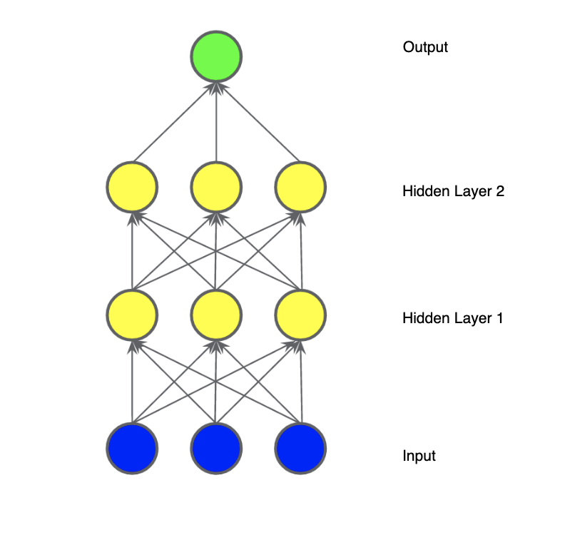
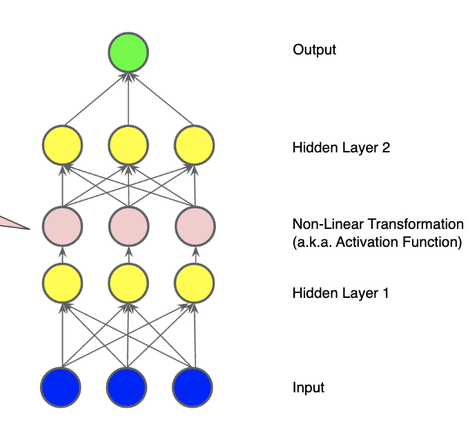

ML Conceptual brief
Contents
ML Conceptual brief#

\(\tiny{\text{Jason Brownlee}}\)
Machine Learning#
Supervised Learning#
Supervised Learning is a machine learning approach that uses labeled data to train algorithms into classifying or predicting outcomes accurately.
Types of Supervised Learning algorithms
Unsupervised Learning#
Unsupervised Learning is a machine learning approach that uses unlabeled data to analyze and cluster datasets. It makes inference without knowing the label or outcomes.
Types of Unsupervised Learning algorithms
Clustering
Association
Reinforcement Learning#
Reinforcement learning is a machine learning training method based on rewarding desired behaviors and punishing the undesirable ones, thereby learning about the environment by trial and error
Types of Reinforcement Learning algorithms
Classification algorithms#
Classification algorithms use input training data to predict the likelihood that subsequent data will fall into one of predetermined categories
Types of Classification algorithms
Probabilistic#
Probabilistic classification models classify, given an observation of an input, a probability distribution over a set of classes
Types of Probabilistic Classification algorithms
Naive Bayes
Logistic regression
Multilayer perceptrons

\(\tiny{\text{www.ismiletechnologies.com}}\)
Naive Bayes#
Bayesian classification helps us find the probability of a label given some observed features, using Bayes theorem, which describes the relationship of conditional probabilities of statistical quantities
READ: https://jakevdp.github.io/PythonDataScienceHandbook/05.05-naive-bayes.html
Types of Bayesian Classification
Multinomial Naïve Bayes Classifier
Bernoulli Naïve Bayes Classifier
Gaussian Naïve Bayes Classifier

\(\tiny{\text{www.analyticsvidhya.com}}\)
Rule based#
Rule based classification helps in classifying datasets by using a collection of “if.. else..” rules. The classifier may contain mutually exclusive rules, exhaustive rules, not mutually exclusive rules, or not exhaustive rules
Decision Tree#
A decision tree is a data mining/machine learning method of predicting/classifying the value of a target variable based on several input variables. In this classification tree, each internal node is labeled with an input feature and each leaf of the tree is labeled with a class or a probability distribution over the classes of either class or into a particular probability distribution
Decision Tree Types
CART - Classification and Regression Trees
Ensemble methods, construct more than one decision tree
Boosted trees
Bootstrap aggregated (or bagged/bagging) decision trees
When a decision tree
classifies things into categories
it’s called Classification Tree
predicts numerical values
it’s called Regression Tree
In classification tree, features of different datatypes can be mixed together
exercise < 20 minutes
classifies as True/False
eat doughnuts
classifies as True/False
numerical thresholds can be different for the same data
For example
40 years or older
True
exercise < 20 minutes
classifies further as True/False
False
exercise > 30 minutes
classifies further as True/False
how to choose optimal k
pick the columns which are least impure
how to measure quality of split
based on the lowest impurity factor
the feature with lowest impurity takes the root position and same iterative process is repeated
| criterion : {“gini”, “entropy”}, default=”gini”
| The function to measure the quality of a split. Supported criteria are
| “gini” for the Gini impurity and “entropy” for the information gain.

\(\tiny{\text{miro.medium.com}}\)

\(\tiny{\text{Wikipedia}}\)
Gini Impurity#
Gini Impurity is the probability of incorrectly classifying a randomly chosen element in the dataset if it were randomly labeled according to the class distribution in the dataset.
If there are \(C\) total classes and \(p(i)\) is the probability of picking a datapoint with class i, then the Gini Impurity is calculated as
Entropy#
Entropy is a measure of state of disorder, randomness, or uncertainty. It is used to represent the uncertainty associated with data
If all the data points belong to a single class, then there is no real uncertainty, and will have a low entropy
If all the data points are evenly distributed across the classes, there is lot of uncertainty, and will have a high entropy
Information Gain#
measures reduction in entropy or surprise from an additional piece of information
greater the reduction in uncertainty, more is the information gained $\(IG(Y,X) = E(Y) - E(Y|X)\)$
Most common#
Linear Regression#
Linear regression helps us model the relationship between two variables by fitting a linear equation to observed data. The most common method for fitting a regression line is the method of least-squares. This method calculates the best-fitting line for the observed data by minimizing the sum of the squares of the vertical deviations from each data point to the line (if a point lies on the fitted line exactly, then its vertical deviation is 0). Because the deviations are first squared, then summed, there are no cancellations between positive and negative values.
We assume here that \(y|x; \theta \sim \mathbb N(\mu, \sigma^{2})\)
The closed form solution for the \(\theta\) that minimizes the cost function is
\[\theta = (X^{T}X)^{-1}X^{T}y\]
Logistic Regression#
Logistic regression models generate probabilities.
The logistic regression is used to model the relationship between a set of independent and dependent variables. The dependent variables are categorical in nature, which is predicted based on the probabilities given some characteristics of class variables. The logistic regression uses sigmoid function to assign class labels.
The logit function is defined as the logarithm of the log odds
\(z\) is also referred to as the log-odds because the inverse of the sigmoid states that \(z\) can be defined as the log of the probability of the \(1\) label (e.g., “dog bark”) divided by the probability of the \(0\) label(e.g., “dog does not bark”)
A standard logistic sigmoid function is defined as the
The linear part of the model predicts the log-odds of the dataset example in the form of probability using logistic sigmoid function.
It tries to learn a function that approximates P(Y|X), by assuming that P(Y|X) can be approximated as a sigmoid function when applied to the linear combination of input features.
where \(z = \theta_{0} + \sum\limits_{i=1}^{m}\theta_{i}x_{i} \)
Similarly,
The gradient descent is calculated as the partial derivative of logistic cost function wrt weight, which is used to maximize the logistic cost function.
The loss function for logistic regression is Log Loss defined as
 \(\tiny{\text{towardsdatascience.com - Shuyu Luo}}\)
Decision Tree#
SVM#
Links#
Explanation#
SVM should maximize the distance between the two decision boundaries. Mathematically, this means we want to maximize the distance between the hyperplane defined by \(w^{T}x+b=−1\) and the hyperplane defined by \(w^{T}x+b = 1\). This distance is equal to \(\frac{2}{\|w\|}\). This means we want to solve \(\max\limits_{w}\frac{2}{\|w\|}\). Equivalently we want \(\min\limits_{w}\frac{\|w\|}{2}\)
SVM should also classify all \(x^{(i)}\), which means \(y^{(i)}(𝐰^{T}x^{(i)}+b \ge 1)\), which gives us the quadratic optimization problem
\[\min\limits_{w,b}\frac{\|w\|^{2}}{2}\]s.t., \(y^{(i)}(𝐰^{T}x^{(i)}+b \ge 1)\) for all \(i \in \{1,..N\}\)
the above is the hard margin SVM, which is possible iff data is linearly separable
This optimization is called the primal problem and is guaranteed to have a global minimum. We can solve this by introducing Lagrange multipliers and converting it to the dual problem
If we allow misclassifications to happen, we call it soft margin SVM optimization problem. The loss function that we minimize is the hinge loss
\(\max\{0, 1-y^{(i)}(𝐰^{T}x^{(i)}+b \ge 1)\}\)
The loss of a misclassified point is called a slack variable and is added to the primal problem of hard margin SVM. So the primal problem for soft margin becomes
\[\min\limits_{w,b}\frac{\|w\|^{2}}{2} + C\sum\limits_{i=0}^{n}\zeta^{(i)}\]s.t., \(y^{(i)}(𝐰^{T}x^{(i)}+b \ge 1 - \zeta^{(i)})\) for all \(i \in \{1,..N\}\)
and \(\zeta^{(i)} \gt 0\) for all \(i \in \{1,..N\}\)
Questionnaires#
What are the goals of SVM?
maximizes the margin around separating hyperplane
classify the class labels as {-1,1}
What does linearly separable means?
Linearly separable data means if graphed in two dimensions, it can be separated by straight line.
What is the difference between hard margin SVM and soft margin SVM?
if the data is linearly separable, we use hard margin SVM
if it is impossible to find linear classifier, we allow misclassification of data points, and use appropriate soft margin SVM
other use case for using soft margin SVM will be
if data is linearly separable but the margin is small and the model either tends to overfit or is too sensitive to outliers, in that case, we opt for soft margin SVM and get larger margin, thereby generalizing the model better
What is functional margin?
What is geometric margin?
What is a kernel?
A kernel is a method of placing a two dimensional plane into a higher dimensional space, so that it is curved in the higher dimensional space. (In simple terms, a kernel is a function from the low dimensional space into a higher dimensional space.)
What is kernel trick?
SVM works better in two dimensional space which is linearly separable, as for non-linear data SVM finds it difficult to classify. So solve this kernel trick is used. A kernel trick is a method of projecting non-linear data onto higher dimensional space so as to easily classify linearly with a hyperplane. This is achieved using Lagrnagian formula/Lagrnagian multipliers.
What are the different types of kernel?
Fisher Kernel: It is a kernel function that analyses and measures the similarity of two objects. This is done on the basis of sets of measurements for each object and a statistical model.
Graph Kernel: It is a kernel function that computes an inner product on graphs.
Polynomial Kernel: It is a kernel commonly used with support vector machines (SVMs). It is also used with other kernelised models that symbolizes the similarity of vectors in a feature space over polynomials of the original variables, allowing learning of non-linear models.
Radial Basis Function Kernel (RBF): It is a real-valued kernel function whose value depends only on the distance from the origin, or distance from some other point called a centre.
What is support vector mean?
support vectors are the data points that lie farthest to the decision surface or hyperplane. They are the data points which are most difficult to classify
Is SVM applied for classification or regression?
basically it is a non-probabilistic binary linear classification method
but different flavors of it SVM exist in a probabilistic classification setting
applying the kernel trick, we can have non-linear classification
Is SVM a binary method only
Naive Bayes#
k-Nearest Neighbor (kNN)#
K-Means#
A cluster is a collection of data points aggregated based on its similarities. A centroid is the imaginary location representing the center of the cluster. In the k-means algorithm, k refers to the number of centroids which is defined initially. Each datapoint is allocated to a cluster iteratively based on optimizing the in-cluster variances (squared Euclidean distances).
Algorithm#
Data has no labels : \((x^{(1)}, x^{(2)}, ..., x^{(m)})\)
Initialize cluster centroid \(\mu_{1}, \mu_{2}, ..., \mu_{k} \in \mathbb R^{n}\) - by randomly pick k example out of your training set and set cluster centroids to k-randomly chosen examples
Repeat until convergence
a. Set \(c^{(i)} := \text{arg }\min\limits_{j} \Vert (x^{(i)} - \mu_{j})\Vert_{2}\) (“color the points”)
Set \(c^{(i)}\) equal to either j = 1 or 2 depending on whether that example \(x^{(i)}\) is closer to cluster centroid 1 or 2
Notation:
L1 norm: \(\Vert x \Vert_{1}\)
L2 norm: \(\Vert x \Vert\) or \(\|x\|^{2}\)
b. For j =1,2,..,k (“move the cluster centroids”)
\(\mu_{j} := \frac{\sum\limits_{i=1}^{m} \mathbb 1 \{c^{(i)} = j\}x^{(i)}} {\sum\limits_{i=1}^{m} \mathbb 1 \{c^{(i)} = j\}}\)
This algorithm is not guaranteed to converge, as it is a non-convex function
Cost/Distortion function
\(J(c,\mu) = \min\sum\limits_{i=1}^{m}\|x^{(i)} - \mu_{c^{(i)}}\|^{2}\)
how do you choose k?
choose manually, depending on what is the purpose of this algorithm
if it is meant for market segmentation for 4 categories, it makes sense to have 4 cluster rather than more
some formula available
How to choose optimal k#
elbow method
silhouette score
Random Forest#
Dimensionality Reduction Algorithms#
Gradient Boosting algorithms#
Gradient boosting is a power technique for building predictive models. Gradient Boosting is about taking a model that by itself is a weak predictive model and combining that model with other models of the same type to produce a more accurate model. The idea is to compute a sequence of simple decisions trees, where each successive tree is built for the prediction residuals of the preceding tree.
In gradient boosting the weak model is called a weak learner. The term used when combining various machine learning models is an ensemble. The weak learner in XGBoost is a decision tree.
Therefore, we need to understand how a decision tree works before we can understand boosting.
Root node
The start of the tree is called the root node.
Decision node
After the initial split are decision nodes.
leaf node
will often lead to the answer or to the predicted value
The Titanic dataset
some groups of people were more likely to survive than others.
The target variable, the attribute we want to predict is survived.
Because the target variable is a 1 or a 0 this is a binary classification problem.
How would a decision tree be applied to this dataset
look for the attribute that is the most important in the dataset.
then analyze the second most import attribute in the dataset
creating a tree involves deciding which features to choose and what conditions to use for splitting, along with knowing when to stop
GBM#
XGBoost#
LightGBM#
CatBoost#

Regression - Predict a value#
Boosted Decision Tree Regression#
Decision Forest Regression#
Fast Forest Quantile Regression#
Linear Regression#
Local Linear Regression#
Locally Weighted Linear Regression (LWR)#
Any parametric model can be made local if the fitting method accommodates observation weights. This is a variant of linear regression where the weights of each training example in the cost function is defined as
\[ w^{(i)}(x) = \exp \left( -\frac{(x^{(i)} - x)^{2}}{2\tau^{2}} \right) \]
Neural Network Regression#
Poisson Regression#
Quantile Regression#
Classification - Predict a class. Choose from binary (two-class) or multiclass algorithms.#
Multiclass Boosted Decision Tree#
Multiclass Decision Forest#
Multiclass Logistic Regression (Softmax Regression)#
Softmax Regression is a generalization of logistic regression where we want to handle multiple classes instead of two classes \((y^{(i)} \in \{0,1\})\)
Multiclass Neural Network#
One vs. All Multiclass#
One vs. One Multiclass#
Two-Class Averaged Perceptron#
Two-Class Boosted Decision Tree#
Two-Class Decision Forest#
Two-Class Logistic Regression#
The hypothesis looks like
and the model parameters \(\theta\) are trained to minimize the cost function
Two-Class Neural Network#
Two Class Support Vector Machine#
Binary vs Multiclass vs MultiLabel classification#
binary classification
classifies observation into one of two possible outcomes
finds a way to separate data from two classes
examples
ad will be clicked or not
spam or not spam
multiclass classification
also referred as multinomial classification
examples
handwritten zip codes
multilabel classification
Linear Regression#
Multiple Linear Regression#
Multivariate Linear Regression#
Supervised learning (Classification, Regression)#
Decision trees#
Regression trees#
Ensembles#
k-NN#
Linear regression#
Naive Bayes#
Artificial neural networks#
Logistic regression#
Perceptron#
The perceptron is an algorithm for learning a binary classifier called a threshold function: a function that maps its input \(\mathbf {x}\) (a real-valued vector) to an output value \(f(\mathbf {x} )\) (a single binary value):
where \(\mathbf {w}\) is a vector of real-valued weights, \( \mathbf {w} \cdot \mathbf {x} \) is the dot product \( \sum _{i=1}^{m}w_{i}x_{i}\), where m is the number of inputs to the perceptron, and b is the bias. The bias shifts the decision boundary away from the origin and does not depend on any input value.

\(\tiny\text{Wikipedia}\)
Relevance vector machine (RVM)#
Support vector machine (SVM)#
Unsupervised learning#
K-means clustering#
KNN (k-nearest neighbors)#
Hierarchal clustering#
Anomaly detection#
Neural Networks#
Principle Component Analysis#
Independent Component Analysis#
Apriori algorithm#
Singular value decomposition#
Clustering#
BIRCH#
CURE#
Hierarchical#
k-means#
Expectation–maximization (EM)#
DBSCAN#
OPTICS#
Mean shift#
Dimensionality Reduction#
Factor analysis#
CCA#
ICA#
LDA#
NMF#
PCA#
PGD#
t-SNE#
Ensemble Methods#
An ensemble of classifiers is a classifier build upon some combination of weak learners
strategy is to learn many weak classifiers and combine them in some way, instead of trying to learn a single strong classifier
rationale is, it is easy to train several simple classifiers and combine them into a more complex classifier than to learn a single complex classifier
Bootstrap aggregating (Bagging)#
sample with replacement from the dataset
diversity in ensemble is ensured by the variation within bootstrap set
best suited for small available training datasets
reduces variance for those algorithms that have high variance, eg CART
Bagging vs Boosting#
In bagging,
instances selected to train individual classifiers are bootstrapped replicas of the training data,
which means that each instance has equal chance of being in each training dataset.
In boosting,
the training dataset for each subsequent classifier increasingly focuses on instances misclassified by previously generated classifiers.
Boosting#
Boosting, in binary class problems, creates sets of three weak classifiers at a time:
the first classifier (or hypothesis) h1 is trained on a random subset of the available training data, similar to bagging.
te second classifier, h2, is trained on a different subset of the original dataset, precisely half of which is correctly identified by h1, and the other half is misclassified. Such a training subset is said to be the “most informative,” given the decision of h1.
the third classifier h3 is then trained with instances on which h1 and h2 disagree.
These three classifiers are then combined through a three-way majority vote.
Schapire proved that the training error of this three-classifier ensemble is bounded above by \(g(\epsilon) < 3\epsilon^2 - 2\epsilon^3\), where \(\epsilon\) is the error of any of the three classifiers, provided that each classifier has an error rate \(\epsilon \lt 0.5\), the least we can expect from a classifier on a binary classification problem.
AdaBoost#
AdaBoost(Adaptive Boosting) - Example of Boosting
extended the original boosting algorithm to multiple classes
multiple classes (AdaBoost.M1, AdaBost.M2)
regression problems (AdaBoost.R)
2 fundamental differences
instances are drawn into subsequent datasets from an iteratively updated sample distribution of the training data
classifiers are combined through weighted majority voting
voting weights are based on classifiers training errors
the distribution weights of instances correctly classified by the current hypothesis are reduced by a factor
whereas weights of misclassified instances are left unchanged
minimizes the exponential loss function that make algorithm sensitive to outlier
Gradient Tree Boosting#
Gradient Tree Boosting or Gradient Boosted Decision Tree (GBDT)
3 main components
additive model
loss function
solves differentiable loss function
can be used both for classification and regression problem
weak learner
at m-th step, fits a decision tree \(h_m(x)\) to residuals
XGBoost#
Random Forest#
Stacking#
Bayes optimal classifier#
Bayesian model averaging (BMA)#
Bayesian model combination (BMC)#
Bucket of models#
Voting (complement of Bagging)#
Blending (subtype of Stacking)#
Ensemble Learning Techniques#
Type of models used#
Homogeneous models
Heterogeneous models
Data Sampling#
With replacement
Without replacement
k-fold
Decision Function#
Voting
Average
Meta Model
Types of learners#
Weak learners
slightly better than random guess
Strong learners
very accurate predictions
Types of ensemble methods#
Decrease Variance - Bagging
Decrease Bias - Boosting
Improve Prediction - Stacking
Types of ensemble learners#
Sequential Learners
mistakes of previous models are learned by their successors
e.g., AdaBoost
Parallel Learners
exploits independence between models by averaging out their mistakes
e.g., Random Forest
Structured Prediction - Graphical models#
Bayes net#
Conditional random field#
Anomaly detection#
k-NN#
Local outlier factor#
Artificial neural network#
Autoencoder#
Cognitive computing#
Deep learning#
DeepDream#
Multilayer perceptron#
A perceptron was the name given to a model having one single linear layer and, if it has multiple layers, it is called a multi-layer perceptron (MLP). Note that the input and the output layers are visible from outside, while all the other layers in the middle are hidden – hence the name hidden layers. In this context, a single layer is simply a linear function and the MLP is therefore obtained by stacking multiple single layers one after the other:

RNN#
LSTM#
GRU#
ESN#
Restricted Boltzmann machine#
GAN#
SOM#
Convolutional neural network#
U-Net#
Transformer Vision#
Spiking neural network#
Memtransistor#
Electrochemical RAM (ECRAM)#
Reinforcement Learning#
Q-learning#
SARSA#
Temporal difference (TD)#
Machine Learning Theory#
Kernel machines#
Bias–variance tradeoff#
Computational learning theory#
Empirical risk minimization#
Occam learning#
PAC learning#
Statistical learning#
VC theory#
Recommender System - Methods and challenges#
Cold start#
Collaborative filtering#
Dimensionality reduction#
Implicit data collection#
Item-item collaborative filtering#
Matrix factorization#
Preference elicitation#
Similarity search#
10 most popular deep learning algorithms#
Convolutional Neural Networks (CNNs)#
Computer Vision with Deep Learning has been constructed and perfected with time, primarily over one particular algorithm — a Convolutional Neural Network(ConvNet/CNN).
Neural networks came to prominence in 2012 as machine learning expert Alex Krizhevsky utilized them to get first prize in the ImageNet competition.
Applications
Facebook’s famous automatic tagging algorithm works? The answer is neural networks.
product recommendation you get on Amazon and several other similar platforms is because of neural networks.
Neural networks are the reason behind Google’s superb image searching abilities.
Instagram’s solid search infrastructure is possible because the social media network uses neural networks.
A convolutional network ingests such images as three separate strata of color stacked one on top of the other. A normal color image is seen as a rectangular box whose width and height are measured by the number of pixels from those dimensions. The depth layers in the three layers of colours(RGB) interpreted by CNNs are referred to as channels.
A ConvNet is able to successfully capture the Spatial and Temporal dependencies in an image through the application of relevant filters.
The role of the ConvNet is to reduce the images into a form which is easier to process, without losing features which are critical for getting a good prediction.
The objective of the Convolution Operation is to extract the high-level features such as edges, from the input image. ConvNets need not be limited to only one Convolutional Layer. Conventionally, the first ConvLayer is responsible for capturing the Low-Level features such as edges, color, gradient orientation, etc.
CNN’s have a ReLU layer to perform operations on elements. The output is a rectified feature map.
the Pooling layer is responsible for reducing the spatial size of the Convolved Feature. This is to decrease the computational power required to process the data through dimensionality reduction. Furthermore, it is useful for extracting dominant features which are rotational and positional invariant, thus maintaining the process of effectively training of the model.
Adding a Fully-Connected layer is a (usually) cheap way of learning non-linear combinations of the high-level features as represented by the output of the convolutional layer. The Fully-Connected layer is learning a possibly non-linear function in that space.
There are various architectures of CNNs available which have been key in building algorithms which power and shall power AI as a whole in the foreseeable future. Some of them have been listed below:
LeNet
AlexNet
VGGNet
GoogLeNet
ResNet
ZFNet


Long Short Term Memory Networks (LSTMs)#
Recurrent Neural Networks (RNNs)#
Recurrent Neural Networks (RNNs) are widely used for data with some kind of sequential structure. For instance, time series data has an intrinsic ordering based on time. Sentences are also sequential, “I love dogs” has a different meaning than “Dogs I love.” Simply put, if the semantics of your data is altered by random permutation, you have a sequential dataset and RNNs may be used for your problem! To help solidify the types of problems RNNs can solve, here is a list of common applications :
Applications
Speech Recognition
Sentiment Classification
Machine Translation (i.e. Chinese to English)
Video Activity Recognition
Name Entity Recognition — (i.e. Identifying names in a sentence)
What are RNNs
RNNs are different than the classical multi-layer perceptron (MLP) networks because of two main reasons:
They take into account what happened previously and
they share parameters/weights.
A recurrent neural network is a neural network that is specialized for processing a sequence of data x(t)= x(1), … , x(τ) with the time step index t ranging from 1 to τ. For tasks that involve sequential inputs, such as speech and language, it is often better to use RNNs. In a NLP problem, if you want to predict the next word in a sentence it is important to know the words before it. RNNs are called recurrent because they perform the same task for every element of a sequence, with the output being depended on the previous computations. Another way to think about RNNs is that they have a “memory” which captures information about what has been calculated so far.
https://pub.towardsai.net/whirlwind-tour-of-rnns-a11effb7808f
https://towardsdatascience.com/recurrent-neural-networks-rnns-3f06d7653a85
https://github.com/javaidnabi31/RNN-from-scratch/blob/master/RNN_char_text generator.ipynb
https://www.coursera.org/learn/nlp-sequence-models/lecture/0h7gT/why-sequence-models
A Gentle Tutorial of Recurrent Neural Network with Error Backpropagation
Generative Adversarial Networks (GANs)#
Radial Basis Function Networks (RBFNs)#
Multilayer Perceptrons (MLPs)#
Self Organizing Maps (SOMs)#
Deep Belief Networks (DBNs)#
Restricted Boltzmann Machines( RBMs)#
Autoencoders#
Optimization algorithms - Deep Learning#
ASGD#
Adadelta#
Adagrad#
Adam#
AdamW#
Adamax#
LBFGS#
NAdam#
RAdam#
RMSprop#
Rprop#
SGD#
SparseAdam#
Evaluation Metrics - Regression#
Mean Absolute Error (MAE)#
Mean Squared Error (MSE)#
Root Mean Squared Error (RMSE)#
R-Squared (Coefficient of determination)#
Adjusted R-squared#
Estimating Errors#
Error Metrics
MAE (Mean Absolute Error)
MSE (Mean Squared Error)
Accuracy Metrics
Precision
Recall
Ranking Metrics
MAP (Mean Average Precision)
AUC (Area Under the Curve)
Evaluation Metrics - Distribution Fit#
Bayesian information criterion#
Kolmogorov–Smirnov test#
Cramér–von Mises criterion#
Anderson–Darling test#
Shapiro–Wilk test#
Chi-square test#
Akaike information criterion#
Evaluation Metrics - Classification#
Classification Threshold#
to map a logistic regression value to a binary category, a classification threshold (also called the decision threshold) is defined
assuming that the classification threshold should always be 0.5 is not true and needs to be tuned
AUC helps us here
“Tuning” a threshold for logistic regression is different from tuning hyperparameters such as learning rate
Confusion Matrix#

. |
. |
|---|---|
|
|


Precision/Positive Predictive Value(PPV)#
Sensitivity/Recall/Hit Rate/TPR#
This tells us what percentage of people with heart disease were actually correctly identified
Sensitivity/Recall is same as True Positive Rate(TPR) $\(\text{True Positive Rate(TPR) = Sensitivity = Recall} = \frac{t_{p}}{t_{p} + f_{n}}\)$
Specificity/Selectivity/TNR#
This tells us what percentage of people without heart disease were actually correctly identified
Specificity is same as (1 - False Positive Rate) $\(\text{Specificity} = \frac{t_{n}}{t_{n} + f_{p}}\)$

Accuracy#
Accuracy is a poor or misleading metric
Typical case includes class imbalance, when positives or negatives are extremely rare
F1#
F1 is an overall measure of a model’s accuracy that combines precision and recall
A good F1 score means that you have low false positives and low false negatives, so you’re correctly identifying real threats and you are not disturbed by false alarms.
An F1 score is considered perfect when it’s 1, while the model is a total failure when it’s 0.
How to identify the correct threshold#
Lower the threshold
increase in number of false positive
decrease in number of false negative
Recalculate the confusion matrix
increase in False positive rate
decrease in True positive rate

Raise the threshold
decrease in number of false positive
increase in number of false negative
Recalculate the confusion matrix
decrease in False positive rate
increase in True positive rate

ROC curve#
Receiver Operator Characteristic Curve (ROC)
helps in deciding the best threshold value
plot true positive rate(y-axis)(Sensitivity) against false positive rate(x-axis)(1-Specificity)
summarizes the confusion matrix for each threshold without having to calculate
. |
. |
|---|---|
|
|
|
|
|


ROC curve for scenarios#
Best-case ROC curve |
ROC curve with no predictive power |
Worst-case ROC curve |
|---|---|---|
AUC = 1 |
AUC = 0.5 |
AUC = 0 |
|
|
|


Area under the curve (AUC)#
Intuition: gives an aggregate measure of performance aggregated across all possible classification thresholds
AUC measures the entire two-dimensional area underneath the entire ROC curve (think integral calculus) from (0,0) to (1,1).
gives the rate of successful classification by logistic model
higher the AUC, better the model is at predicting classes
helps compare the ROC curve of different models
is the probability that the classifier will be able to tell which one is which
AUC = 1, implies an excellent model, good measure of separability
AUC = 0, implies a poor model, worst measure of separability
AUC = 0.5, implies an no class separation capacity, a random classifier
AUC is desirable for the following two reasons:
AUC is scale-invariant.
It measures how well predictions are ranked, rather than their absolute values.
AUC is based on the relative predictions, so any transformation of the predictions that preserves the relative ranking has no effect on AUC
AUC is classification-threshold-invariant.
multiplying all of the predictions from a given model by 2.0 - No impact on AUC
It measures the quality of the model’s predictions irrespective of what classification threshold is chosen.
. |
. |
|---|---|
|
|


. |
. |
|---|---|
|
|
|
|


Diagnostic Testing Diagram#
Gini Coefficient#
Log Loss or Cross Entropy Loss#
The loss function for linear regression is squared loss.
The loss function for logistic regression is Log Loss, which is defined as follows
The cost function is defined as the sum across all the training examples as:

\(\tiny{\text{towardsdatascience.com - Parul Pandey}}\)
\(\tiny{\text{towardsdatascience.com - Sarang Narkhede}}\)
\(\tiny{\text{towardsdatascience.com - Shuyu Luo}}\)
Prediction Bias#
quantity that measures how far apart those two averages are.
Prediction Bias = Average of Predictions - Average of labels in dataset
“average of predictions” should \(\approx\) “average of observations”
Possible root causes of prediction bias are:
Incomplete feature set
Noisy data set
Buggy pipeline
Biased training sample
Overly strong regularization
To examine prediction bias
examine the prediction bias on a “bucket” of examples.
Linearly breaking up the target predictions.
Forming quantiles
Plot Prediction bias curve
prediction vs label
some subsets of the data set are noisier than others
Optimal Predicted Probability Cutoff#
maximum vertical distance between ROC curve and diagonal line
called as Youden’s J index
maximize the difference between True Positive and False Positive
Generative Models#
Discriminative Models#
Types of classifiers#
Estimation methods#
Maximum Likelihood (ML) Estimation#
A maximum likelihood estimator \(\hat{\theta}\) is the solution of maximization problem. \(\hat{\theta}\) is the parameter that maximizes the likelihood of the sample \(\zeta\)
Iterative Procedures#
To calculate the likelihood equations, which generally cannot be solved explicitly for an estimator \(\hat{\theta} = \hat{\theta}(y)\), except for special cases. \(\frac{\partial L(\theta; y)}{\partial \theta} = 0\)
It is solved iteratively, starting iteratively from an initial guess of \(\theta\), seeking a convergent sequence \(\hat{\theta}_{r+1} = \hat{\theta}_{r} + \eta_{r}d_{r}(\hat{\theta})\), where \(d_{r}(\hat{\theta})\) indicates the descent direection of \(r^{th}\) step and \(\eta_{r}\) is the learning rate
Few of the iterative methods are:
Gradient descent method
Newton-Raphson method
Maximum a Posteriori (MAP) Estimation#
It is an estimate of posterior distribution
It is seen as a regularization of MLE
It tends to look like MLE asymptotically as \(n \rightarrow \infty\)
Prior probability represents what is originally believed before new evidence is introduced
Posterior probability takes this new information into account.
Minimum Mean Square Error (MMSE) Estimation#
Expectation-Maximization(EM) algorithm#
The EM algorithm helps us find the MLE for model parameters when the data has missing data points or unobserved (hidden) latent variables. It is an iterative method to approximate maximum likelihood function.
Gaussian Density#
MLE vs EM#
Applications of EM#
Least Square (LS) Estimation#
The best fit estimation line in least-square minimizes the sum of squared residuals
it has a closed form solution
Linear Least squares#
Types of Linear least squares formulation:
Ordinary Least squares (OLS)
The OLS method minimizes the sum of squared residuals, and leads to a closed-form expression for the estimated value of the unknown parameter vector
it has the assumption that the error terms have finite variance and are homoscedastic
Weighted Least squares (WLS)
it has the assumption that the error terms are heteroscedasticity
Generalized Least squares (GLS)
it has the assumption that the error terms are either heteroscedasticity or correlations or both are present among the error terms of the model
Non-linear#
The nonlinear problem is usually solved by iterative refinement; at each iteration the system is approximated by a linear one, and thus the core calculation is similar in both cases.
Ordinary#
Weighted#
Generalized#
Partial#
Total#
Non-negative#
Ridge regression#
Regularized#
Least absolute deviations#
Iteratively reweighted#
Bayesian#
Bayesian multivariate#
Bayes Estimator#
Probit#
Logit#
Kernel density estimation (KDE)#
KDE is a non-parametric way to estimate the probability density function of a random variable
Frequentists vs Bayesian Approach#
Frequentists define probability as a relative frequency of an event in the long run
Bayesians define probability as a measure of uncertainty and belief for any event.
TODO: READ
Parametric vs NonParametric Method#
Parametric methods makes assumption in regards to the form of the function \(f(X) = \beta_{0} + \beta_{1}X_{1} + \beta_{2}X_{2} + ... + \beta_{p}X_{p}\), where \(f(X)\) is the unknown function to be estimated, \(\beta\) are the coefficients to learn, \(X\)’s are the corresponding inputs and \(p\) is the number of independent variables.
These assumptions may or may not be correct
these methods are quite fast
they require significantly less data
they are more interpretable
Examples
Linear Regression
Naive Bayes
Perceptron
NonParametric methods donot make any underlying assumption wrt to the form of the function to be estimated.
they tend to be more accurate
they require lots of data
Examples:
Support Vector Machines
K-Nearest Neighbors
Prediction vs Inference#
Mathematical functions#
Logistic/Sigmoid function#
L - the curve’s maximum value
\(x_{0}\) - the sigmoid’s midpoint
k - the logistic growth rate or steepness of curve
they are asympotes, never reaches 0
output always fall between 0 and 1
Standard logistic sigmoid function#
L = 1 - the curve’s maximum value
\(x_{0}\) = 0 - the sigmoid’s midpoint
k = 1 - the logistic growth rate or steepness of curve
Logit function#
The logit function is the logarithm of the odds ratio (log-odds)
Probit function#
Softplus function#
Weighted sum#
Likelihood function#
The likelihood talks about the optimal value of mean or standard deviation or parameters for a distribution given a bunch of observed measurements.
The likelihood function defines the joint probability of observed data as a function of parameters of the model.
It gives us a probabilistic prediction to the observed data.
In terms of hypothesis testing, the likelihood function gives us the probability of varying outcomes given a set of parameters defined in the null hypothesis as \(f(\theta \mid x)\) is to inference (finding the likely parameters given a specific outcome).
The way of expressing how good a model is using the likelihood of the data given the model, which can be expressed as
It contains the product of probability densities of all of the samples, an aggregate measure of how probable the dataset is given the choice of specific model. The best model is expressed as
Log-Likelihood function#
The log likelihood for logistic regression is given by
Gradient of log likelihood function#
It tries to choose values of \(\theta\) that maximizes the function
Negative log likelihood function#
Likelihood vs Log-Likelihood function#
Additive Models#
Machine Learning vs Rule-based Systems#
rule-based systems
humans manually program rule-based systems
rule based system explicitly need to be told what to do by humans
self-learning systems
machines automatically train self-learning systems
self-learning systems learn from experience
Model Selection/Validation#
typical split - train(50%), validate(25%), test(25%)
How to choose one among a set of candidate models
analytical - probabilistic statistical measure
benefit
test dataset is not required
entire dataset is used to fit the model
final model based on score prediction
limitation
cannot apply to compare different models
metric derived for each model is different
do not take inaccount uncertainty of the model, favour simple models
types
AIC - Akaike Information Criterion
scoring based on its log-likelihood and complexity
derived from frequentist probability
AIC deals with trade-off between goodness of fit of model and simplicity of the model
AIC deals with both the risk of overfitting and the risk of underfitting
AIC estimates the relative amount of information lost by a given model: the less information a model loses, the higher the quality of that model
BIC - Bayesian Information Criterion
scoring based on its log-likelihood and complexity
derived from Bayesian probability
the penalty is different from AIC
MDL - Minimum Description Length
comes from information theory
SRM
sampling method
types
cross validation
LOOCV - Leave-One-Out CV
Stratified
Repeated
Nested
bootstrap
jackknife
where
N - number of examples in training dataset
LL - log-likelihood of the model on the training dataset
d - number of parameters in the model
hold out
split data into train and test set
dependent on how the data is split
cross validation or k-fold
dataset is randomly split into k-groups
one is used as test set, rest as training set
gives model opportunity to train on multiple train-test split
requirees more computational power and time
Activation Functions#
Sigmoid function#
Features
Sigmoid function gives an S-shaped curve
used to map predicted values to probabilities
function maps any real value into another value between 0 and 1
Function
Equation:
Derivative:
Range: (0,1)
Adv
function is differentiable. can find the slope of the sigmoid curve at any two points
Output values bound between 0 and 1, which normalizes output of each neuron
DisAdv
Vanishing gradient — for very high or very low values of X, there is almost no change to the prediction
due to vanishing gradient problem, sigmoids have slow convergence
outputs are not zero centered
computationally expensive
Softmax#
Features
calculates probability distribution of an event over ’n’ different events
Function
Equation:
Probabilistic interpretation:
Range: (0, 1)
Adv
Able to handle multiple classes only one class in other activation functions
normalizes the outputs for each class between 0 and 1
useful for output neurons to classify inputs as probability of multiple categories.
tanh function#
Function
Equation:
Derivative:
Range: (-1, 1)
Adv
zero centered
good for model that have strongly negative, neutral, and strongly positive values
function and its derivative both are monotonic
works better than sigmoid function
DisAdv
vanishing gradient problem and hence slow convergence
ReLU (REctified Linear Unit) function#
Features
a simple non-linear function that chops off at non-zero
the function is zero for negative values and it grows linearly for positive values.
is very simple to implement (generally, three instructions are enough), while the sigmoid is a few orders of magnitude more.
This helped to squeeze the neural networks onto an early GPU
Function
Equation:
Derivative:
Range:
Adv
Computationally efficient
allows the network to converge very quickly
Non-linear
although it looks like a linear function, ReLU has a derivative function and allows for back-propagation
DisAdv
Dying ReLU problem
when inputs approach zero, or are negative, gradient of function becomes zero, network cannot perform back-propagation and cannot learn
ELU#
LeakyReLU#
Features
variant of ReLU
Function
Equation:
Derivative:
Range: (0.01, +\(\infty\))
Adv
Prevents dying ReLU problem
this variation of ReLU has a small positive slope in the negative area, so it does enable back-propagation, even for negative input values
DisAdv
Results not consistent
leaky ReLU does not provide consistent predictions for negative input values.
During the front propagation if the learning rate is set very high it will overshoot killing the neuron.
Feature Engineering#
Mapping RawData to Features#
Has Good Feature property#
One-Hot Encoding#
Scaling Feature values#
with mean and std deviation
as z-values
Outlier Treatment#
Binning by values#
Binning by quantiles#
Scrubing#
Data reliability
Feature Crosses#
a synthetic feature formed by multiplying (crossing) two or more feature
[A x B]: a feature cross formed by multiplying the values of two features.
[A x B x C x D x E]: a feature cross formed by multiplying the values of five features.
[A x A]: a feature cross formed by squaring a single feature.
logical conjunctions
country:usa AND language:spanish
\(x_{1}x_{2}\)
Regularization - Simplicity#
Not trusting your data too much
Early stopping#
Penalize model complexity#
Empirical Risk Minimization#
aim for low training error
minimize: Loss(Data|Model)
Structural Risk Minimization#
aim for low training error
while balance against complexity
minimize: Loss(Data|Model) + Complexity(Model)
How to define model complexity#
prefer smaller weights
Loss Function with L2 Regularization#
the sum of the squares of all the feature weights
this does not depend upon the data, but rely on weights
will encourage many of the non-informative weights to be nearly (but not exactly) 0.0.
Regularization Rate#
minimize: Loss(Data|Model) + \(\lambda\) Complexity(Model)
Regularization - Sparsity#
Sparse cross-feature#
Model size will be huge
Noisy coefficients causing overfitting
Explicitly zero out weights#
\(L_{2}\) regularization encourages weights to be small, but doesn’t force them to exactly 0.0
\(L_{0}\) regularization
penalize for non-zero weights
but this is not convex and hard to optimize
Relax to \(L_{1}\) regularization
Penalize sum of abs(weights)
Convex problem
Encourage sparsity unlike \(L_{2}\)
L1 vs L2 regularization#
\(L_{2}\) and \(L_{1}\) penalize weights differently:
\(L_{2}\) penalizes \(weight^{2}\)
\(L_{1}\) penalizes |weight|
Both \(L_{2}\) and \(L_{1}\) have different derivatives
derivative of \(L_{2}\) is 2 * weight.
derivative of \(L_{2}\) is a force that removes x% of the weight every time
derivative of \(L_{1}\) is k (a constant, whose value is independent of weight)
derivative of \(L_{1}\) is a force that subtracts some constant from the weight every time
L1 regularization#
will encourage most of the non-informative weights to be exactly 0.0.
\(L_{1}\) regularization of sufficient lambda tends to encourage non-informative weights to become exactly 0.0.
By doing so, these non-informative features leave the model.
\(L_{1}\) regularization may cause informative features to get a weight of exactly 0.0.
Be careful
L1 regularization may cause the following kinds of features to be given weights of exactly 0:
Weakly informative features.
Strongly informative features on different scales.
Informative features strongly correlated with other similarly informative features.
Elastic Nets#
is an extension of linear regression that adds regularization penalties to the loss function during training
the estimates from the elastic net method is defined as $\( \hat{\beta} = \text{argmin}_{\beta}(\| y - X\beta \|^{2} + \lambda_{2}\| \beta\|^{2} + \lambda_{1}\| \beta\|_{1}) \)$
the benefit of elastic net is that it allows balance of both the penalties as a weighted sum $\(\lambda_{1} + \lambda_{2} = 1\)$
Neural Network#
Linear combination of linear function is still linear (Left below)
To make NN non-linear, non-linear transformation needs to be introduced (Right below)
neural networks generally use non-linear activation functions
. |
. |
|---|---|
 |
 |
Linear Regression Model vs NN#
A neural network without an activation function is just a linear regression model.
Linear combination of linear function is still linear
To make NN non-linear, non-linear transformation needs to be introduced
Why use activation function#
without activation function the weights and bias would simply do a linear transformation
A linear equation is simple to solve but is limited in its capacity to solve complex problems and have less power to learn complex functional mappings from data.
A neural network without an activation function is just a linear regression model.
neural networks use non-linear activation functions
Types of Activation Function#
Linear or Identity Activation Function
Non-linear Activation Functions
Linear Activation function#
Activation function should be differentiable
problem in using linear activation function
Back-propagation is not possible
The derivative of linear function is a constant, and has no relation to the input, X.
It’s not possible to go back and understand which weights in the input neurons can provide a better prediction.
All layers of the neural network collapse into one
with linear activation functions, no matter how many layers in the neural network, the last layer will be a linear function of the first layer
Non-Linear Activation function#
allow model to create complex mappings between the network’s inputs and outputs
suited fir non-linear or high dimensionality models.
almost any functional computation in a neural network is possible
allow back-propagation because they have a derivative function which is related to the inputs.
allow “stacking” of multiple layers of neurons to create a deep neural network